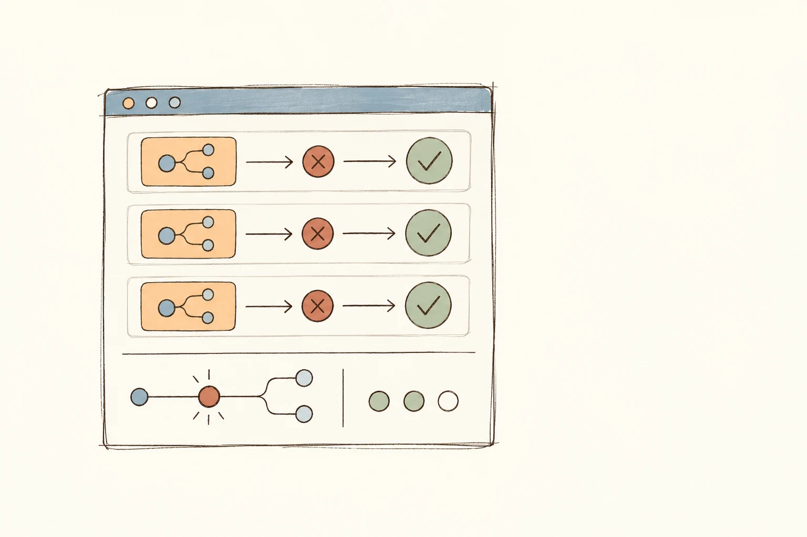

THE NOTEBOOK / EIGHT ESSAYS
Notes on engineering,
and the people behind it.
I write when I have worked through an idea far enough that it might be useful to another engineering leader.

AI / Engineering · 8 MIN READ
Code review controls several different risks. A safer process routes changes to the evidence and human attention they actually need.
Read essay: Before You Remove Code Review, Name the Risk It Controls
AI / Leadership · 10 MIN READ
AI can help managers recover evidence and challenge their reasoning, but it should never score engineers or make employment decisions.
Read essay: Use AI to Find Evidence, Not Score Engineers
Leadership / Feedback · 9 MIN READ
A performance improvement plan should diagnose the real problem, define observable expectations and give the employee a genuine chance to pass.
Read essay: Make Improvement Plans Winnable—or Don't Pretend
Leadership / Feedback · 7 MIN READ
Annual reviews cannot replace clear, timely feedback grounded in real work, role expectations and evidence collected while it is fresh.
Read essay: Feedback Is the Performance System
Leadership / Careers · 6 MIN READ
Career ladders should make expectations, evidence and promotion decisions easier to explain without turning growth into a checklist.
Read essay: A Career Ladder Should Reduce Surprises, Not Create Bureaucracy
AI / Engineering · 7 MIN READ
AI makes code, specifications and demos cheaper to produce. Production still depends on review, testing, controlled authority and human ownership.
Read essay: AI Makes Building Easy. Production Is Hard.
Leadership / Strategy · 4 MIN READ
Most teams have more good ideas than capacity. The job is to find the constraint holding the business back and put enough attention on it to make a difference.
Read essay: Prioritization Is Constraint Management
Engineering / Strategy · 1 MIN READ
Architecture debates go nowhere when the product direction is unclear. Once the outcome and tradeoffs are explicit, many technology choices become easier.
Read essay: Technical Direction Is Not a Technology Decision